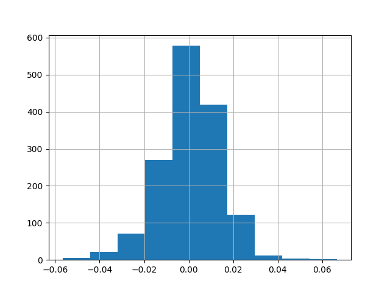
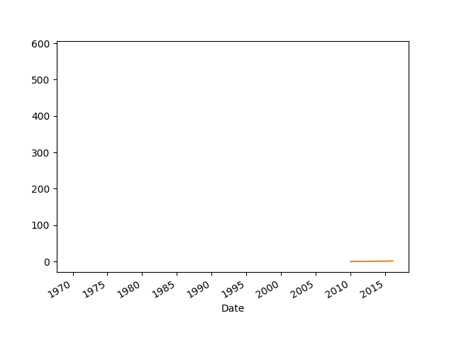
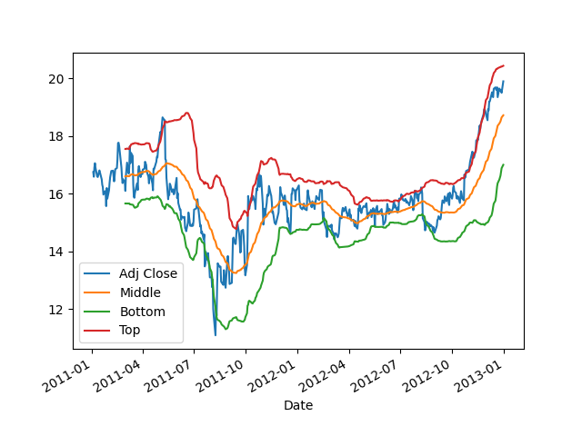
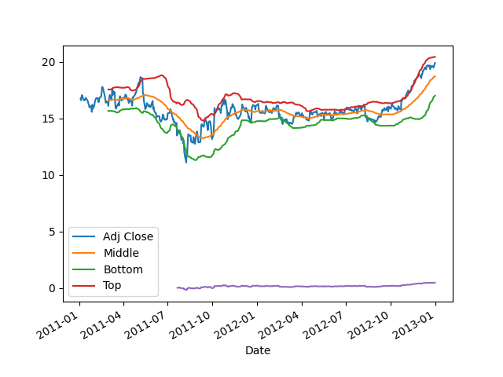

Bir stratejiyi tasarladıktan sonra onu piyasada kullanmadan önce geriye dönük veri üzerinde testten geçirmek iyi olur. Hatta mevcut işlemekte olan bir stratejinin o ana kadar olan başarısını da aynı tekniklerle ölçebilmek faydalı olurdu.
Geriye Dönük Testler (Backtesting)
Stratejinin başarısını ölçmek için bazı kriterler var, Sharpe Oranı, Düşüş Kalıcılığı bu ölçütlerden bazıları.
Sharpe Oranı
Diyelim ki bir stratejiyi geriye dönük teste tabi tutuyoruz, yani tarihi veri üzerinde ileride ne olacağını “bilmiyormuş gibi’’ yapıp alışverisin performansının ne olacağını ölçüyoruz. Belli zamanlarda alınıp satılan varlığın tabii ki bir getirisi (return) olacaktır, getiri eksi de olabilir, yani kayıp. Bu getirinin istatistiki olarak önemli (significant) olup olmadığını anlamak için bazı testler uygulayabiliriz. Diyelim ki herhangi bir zaman \(t\)’deki getiri \(R_t\), ve \(\mu = E(R_t), \sigma^2=Var(R_t)\) - her \(t\) için dağılım aynı ve bağımsız (IID). Zaman bir günü temsil ediyor olabilir, ve eğer veri bunu doğruluyorsa, getirilerin Gaussian olduğu faraziyesi de yapılabilir. IGE verisi için
ige = pd.read_csv('IGE.csv',index_col='Date')
ige = ige.sort_index()
ige['Returns'] = ige['Adj Close'].pct_change()
ige.Returns.hist()
plt.savefig('tser_back_01.png')
Varlığın “getirisi’’ dedik, üstteki durumda sanki varlığı en başta alıp elde tutmuşuz gibi düşünüyoruz, bu durumda günlük yüzde değişimler o gündeki kazanç / kayıp gibi düşünülebiliyor.
Baştaki soruya gelelim, getirinin sıfırdan farklı mı, ve bu farklılık istatistiki olarak önemli mi?
Sharpe Oranı (Sharpe Ratio) bu noktada devreye girer. SO “risk bazında ölçeklenmiş getiri’’ diye adlandırılır bazen, yani birimi oynaklık (volatility) olan getiridir. Birim derken mesela hızı belirtmek için arabanın hızı saatte 60 km diyebiliyoruz, hızı saat bazında belirtmiş oluyoruz. Bu demektir ki 1 saat geçince alınan yol 60 kilometredir. SO için benzer durum geçerli, birim risk, o zaman SO rakamı”riskteki yüzde 1’lik değişimin getiriye ne kadar etki edeceği’’ olarak ta görülebilir.
Eğer yıllık bazda getirilerin standart sapması (ki oynaklığın tanımı bu) yüzde 20 ise ve mesela borsadan / bir senetten / entrumandan yüzde 3’lük bir yıllık getiri bekliyorsak, %3 / %20 = 0.15 Sharpe oranını elde ederiz. Matematiksel olarak,
\[ SR = \frac{E(R_t) - R_f}{\sqrt{Var(R_t)}} = \frac{\mu - R_f}{\sigma} \]
\(R_f\) “risksiz yatırım’’ dır, yatırım sratejinizin finans edilmesi gerekiyor ve bu sebeple para yatırımda bağlı tutuluyorsa, risksiz yatırımın getirisinin çıkartılması gerekir (çünkü yatırım yapmayıp risksiz getiri elde edebilirdiniz, gerçek getiri riskliden risksizin çıkartılmış hali olmalıdır), ve o zaman test edilen”artık getiri (excess return)’’ olacaktır. Merak ettiğimiz getirimizin risksiz olan getiriye göre performansıdır yani. \(\mu,\sigma\) veriden tahmin edilecektir, ki \(\hat{\mu},\hat{\sigma}\), böylece \(SR\) için tahmin edici \(\hat{SR}\) olur,
\[ \hat{SR} = \frac{\hat{\mu} - R_f}{\hat{\sigma}} \qquad (1) \]
Üstteki ifade standardizasyon, Z testine benzemesi raslantı değil, hatta bu benzerlikten özellikle bahsetmemiz lazım; İstatistik notlarından hatırlarsak, z-testi, standardizasyon,
\[ Z = \frac{\bar{X} - \mu}{\sigma / \sqrt{n} } \]
Nüfus \(\mu\)’nun sıfır olduğunu kabul edersek, ve yeterince büyük örneklem \(n\) için \(\sigma\) yerine \(s\) kullanabileceğimiz için,
\[ Z = \frac{\bar{X}}{s / \sqrt{n} } \]
\[ \frac{Z}{\sqrt{n}} = \frac{\bar{X}}{s} \]
Bir diğer açıdan gelirsek, \(R_t(q)\) bir \(q\) periyodunun tamamının getirisi olsun, ki
\[ R_t(q) \equiv R_t + R_{t-1} + ... + R_{t-q+1} \]
\[ SR(q) = \frac{E(R_t(q)) - R_f(q)}{\sqrt{Var(R_t(q))}} \]
\[ \frac{q(\mu-R_f)}{\sqrt{q} \sigma} \]
\[ = \sqrt{q}SR \]
Altta IGE üzerindeki Sharpe oranı,
print len(ige)
n = 252 # bir yil, bu kadar ticari gun
Rf = 0.04 # risksiz getiri yuzde 4
ige['excessRet'] = ige['Returns'] - Rf/n
sharpeRatio = np.sqrt(n)*ige['excessRet'].mean() / ige['excessRet'].std()
print sharpeRatio1504
0.789317538345Averajı hesaplarken 252’den fazla veri noktası kullandık, niye hala 252’nın karekökü ile çarpıyoruz? Dikkat risksiz getiri çıkartırken bu çıkartma işlemini \(R_f/n\) ile yaptık, ki \(n=252\). Ayrıca bu çarpımı bir “daha büyük zaman dilimine ölçekleme’’ olarak görebiliriz; eldeki verinin tamamına ölçeklemek için veri sayısı ile çarpabilirdik, eğer yıl bazına ölçeklemek istersek 252 karekökü ile çarpacağız. Yani [4, sf. 120],
\[ \sigma_{sene}^2 = 252 \sigma_{gun}^2 \]
Sharpe oranını hesaplayınca alttaki Z skorlarına göre ne kadar iyi olduğunu görebiliriz. Üstteki değer alttaki değerlerin herhangi birinden yüksek mi?
from scipy.stats.distributions import norm
alpha=0.10; print norm.ppf(1-alpha), alpha
alpha=0.05; print norm.ppf(1-alpha), alpha
alpha=0.01; print norm.ppf(1-alpha), alpha
alpha=0.001; print norm.ppf(1-alpha), alpha1.28155156554 0.1
1.64485362695 0.05
2.32634787404 0.01
3.09023230617 0.001Değil. Demek ki istatistiki olarak önemli / büyük bir Sharpe oranı elde edemedik. Genel kural olarak bir stratejinin etkili kabul edilmesi için 1’den büyük Sharpe Oranına sahip olması gerekir.
Üstteki listedeki soldaki değerlerle onların alpha, yani
p-değerlerinin beraber gösterilmiş olmasına dikkat, ikisi arasında
ilişki var (aslında liste kullanmayıp direk statsmodels
çağrıları ile p-değerini her Sharpe değeri için hesaplayabilirdik, bu da
ödev olsun), p-değeri sıfıra yakın ise “hipotezi reddetmemizi’’ sağlar,
ki bu problemde sıfır hipotezimiz, yani reddetmek için ezici kanıt elde
etmemiz gereken şey getirilerin Gaussian’ının sıfır merkezli olduğu idi,
bu iddiayı reddedemedik.
Daha direk / basit bir örnek üzerinde görmek gerekirse, mesela hisselerin mi, tahvillerin mi getirilerinin kriz zamanında daha iyi olacağını merak ediyoruz. 2008-2012 arasında SP&500 ve 7-10 senelik tahvil fiyatlarını takip eden bir enstrüman (ETF) olan İEF getirilerini Sharpe oranı ile karşılaştırabiriz.
import pandas as pd
df1 = pd.read_csv("sharpe-spy.csv")
df2 = pd.read_csv("sharpe-ief.csv")
def sharpe(series):
dailyret = series.pct_change()
excessRet=dailyret-0.04/252
return np.sqrt(252)*np.mean(excessRet)/np.std(excessRet)
print (sharpe(df1['Adj Close']))
print (sharpe(df2['Adj Close']))-0.04718388850111191
0.5100019269309098Sonuca gore tahviller kriz zamaninda daha iyi getiri veriyor.
Düşüş Kalıcılığı (Drawdown)
Bir strateji eğer yakın geçmişte para kaybetmiş ise düşüşte demektir. İki önemli düşüş kavramı maksimum düşüş ve maksimum düşüş süresi - bu iki ölçüt ayrı düşüşleri temsil ediyor olabilirler.

Yatırımcılar için en moral bozucu durumlardan biri budur, uzun süren ve içinden çıkalamayan düşüşler. Bu sebeple yatırım stratejimiz onlardan uzak durmaya gayret etmeli, bu sebeple tarihi veriye bakıp bazı düşüş ölçütlerini kestirmeye uğraşıyoruz ki gelecek hakkında bir fikir edinebilelim. Bunları öğrendikten sonra yatırımcı kendine şunu da sormalıdır: “ne kadarlık düşüşü tolere edebilirim?’’. %20’lik ve 3 ay mı, yoksa %10 ve bir ay mı? Kullanmayı düşündüğümüz stratejinin geriye dönük testinden gelen ölçütleri bu toleransa göre irdelemek gerekir.
Bir önceki örnek IGE varlığını alıp tutmak üzere kurulmuştu. Şimdi bu stratejiye bir ek yapalım, IGE aldığımız zaman dengeleme amaçlı olarak SPY adlı (Standard’s and Poors endeksi üzerinden alım/satım yapılmasını sağlayan bir ETF üzerinden açığa satış yapalım. Bu sebeple SPY getirisi çıkartılıyor, yani getiri ne ise onun etkisi bize tersi olarak gelecek, ayrıca ikiye bölüyoruz çünkü sermayemiz iki katına çıktı.
Düşüş hesabının kümülatif getiriyi baz aldığına dikkat. Yani herhangi bir ana kadar elde ettiğimiz biriken getirinin düşüşe geçip geçmediğini kontrol ediyoruz.
import numpy as np
def calculateMaxDD(cumret):
highwatermark=np.zeros(len(cumret))
drawdown=np.zeros(len(cumret))
drawdownduration=np.zeros(len(cumret))
for t in range(1,len(cumret)):
highwatermark[t]=np.max([highwatermark[t-1], cumret[t]])
drawdown[t]=(1+cumret[t])/(1+highwatermark[t])-1
if (drawdown[t]==0):
drawdownduration[t]=0
else:
drawdownduration[t]=drawdownduration[t-1]+1
return np.min(drawdown), np.max(drawdownduration)import dd, pandas as pd
spy = pd.read_csv('SPY.csv',index_col='Date')
spy = spy.sort_index()
spy['Returns'] = spy['Adj Close'].pct_change()
spy['netRet']=(ige['Returns'] - spy['Returns'])/2.
spy['cumret']=(1+spy['netRet']).cumprod()-1.0
n = 252
sharpeRatio = np.sqrt(n)*spy['netRet'].mean() / spy['netRet'].std()
print ('SR', sharpeRatio)
print 'Dusus', dd.calculateMaxDD(spy['cumret'])SR 0.783681100181
Dusus (-0.095292680472086833, 497.0)Bu stratejinin Sharpe oranı 0.78 çıktı. Maksimum düşüş %10 civarı, maksimum düşüş süresi 497 gün! Oldukça uzun bir süre. SO zaten çok yüksek değil.
Stratejiler Kodlamak
Strateji kodlarken günlük bazda sinyal üretmek, ve pozisyon hesaplama yapmak gerekiyor. Sinyal üretmek demek mesela al için +1 sat için -1 üretmek demek olabilir. Pozisyon üretmek ise bu sinyali alıp para miktarı bazlı ne kadar işlem yapıldığıdır. Eğer +1 sinyali var ise ve ertesi günün fiyatı 1200 lira ise, +1200 liralık pozisyona girmişim demektir.
Kumulatif getiriyi hesaplamak için pozisyonları günlük getiri yüzdesine çevirmek en iyisi, böylece günlük getiri \(r_i\)’leri \(1+r_i\) ile birbiri ile çarparak ele geçen kumulatif miktarı hesaplayabiliriz.
Dikkat, sinyali hesapladıktan sonra bir ileri kaydırıyoruz ki bir önceki günün sinyali bir sonraki günün alımına yansısın.
Alttaki strateji basit bir momentum stratejisi, bu konuda daha fazla detay {} bölümünde.
import pandas as pd, zipfile
import numpy as np, dd
with zipfile.ZipFile('amzn.zip', 'r') as z:
px = pd.read_csv(z.open('amzn.csv'),index_col=0,parse_dates=True)
px = px[px.index < '27-01-2016']
signals = pd.DataFrame(index=px.index)
signals['signal'] = 0
short_ma = pd.rolling_mean(px['Adj Close'], 40, min_periods=1)
long_ma = pd.rolling_mean(px['Adj Close'], 100, min_periods=1)
signals['signal'] = np.where(short_ma > long_ma, 1, 0)
px['signal'] = signals['signal'].shift(1)
px['ret'] = px['Adj Close'].pct_change() * px['signal']
ret = px.ret.dropna()
cumret=np.cumprod(1+ret)-1
print 'APR', ((np.prod(1.+ret))**(252./len(ret)))-1
print 'Sharpe', np.sqrt(252.)*np.mean(ret)/np.std(ret)
print 'Dusus', dd.calculateMaxDD(cumret)APR 0.150911691294
Sharpe 0.646084214921
Dusus (-0.26067046806090866, 374.0)cumret.plot()
plt.savefig('tser_back_02.png')Bir diğer ana yaklaşım Bollinger Bantlarını baz alır. Bu yaklaşımda fiyatın yürüyen ortalaması ve yürüyen standart sapması hesaplanır, iki zaman serisi elde edilir. Şimdi, günlük bazda, eğer fiyat serisi ortalamanın iki standart sapma üstüne çıkmış ise satım, iki standart sapma altında ise alım sinyali üretilir.
df_yhoo = pd.read_csv('yhoo.csv',parse_dates=True,index_col=0)
signals = pd.DataFrame(index=df_yhoo.index)
signals['signal'] = np.nan
middle = pd.rolling_mean(df_yhoo['Adj Close'], 40, min_periods=1)
std = pd.rolling_std(df_yhoo['Adj Close'], 40, min_periods=1)
df_yhoo['Middle'] = middle
df_yhoo['Top'] = middle+2*std
df_yhoo['Bottom'] = middle-2*std
df_yhoo[['Adj Close','Middle','Bottom','Top']].plot()
plt.savefig('tser_back_04.png')
signals['signal'] = np.where(df_yhoo['Adj Close'] > middle+2*std, -1, np.nan)
signals['signal'] = np.where(df_yhoo['Adj Close'] < middle-2*std, 1, np.nan)
signals['signal'] = signals['signal'].fillna(method='ffill')
df_yhoo['ret'] = df_yhoo['Adj Close'].pct_change() * signals['signal'].shift(1)
ret = df_yhoo.ret.dropna()
cumret=np.cumprod(1+ret)-1
print 'APR', ((np.prod(1.+ret))**(252./len(ret)))-1
print 'Sharpe', np.sqrt(252.)*np.mean(ret)/np.std(ret)
print 'Dusus', dd.calculateMaxDD(cumret)APR 0.120315754795
Sharpe 0.515472721337
Dusus (-0.40536193029490575, 390.0)
Üstte ffill ile her sinyali bir sonraki diğer sinyale
kadar “uzatmak’’ zorunda kaldık, yani her iki sinyal arasındaki boşluğu
önceki sinyali tekrarlayarak doldurduk. Bunu yapmak zorunda kaldık çünkü
sinyal tek bir gün için üretiliyordu, fakat mesela bir al anından sat
anına kadar aradaki tüm getiri veri noktalarını o alıma saymak lazımdı,
bu sebeple sinyal ileri doğru tekrarlandı. Momentum örneğinde bu problem
olmamıştı çünkü iki yürüyen ortalama sinyalinden biri diğerinin üzerine
çıktığı zaman bu sürede sürekli aynı sinyal üretiliyor, yani
tekrarlamaya gerek kalmıyor.
cumret.plot()
plt.savefig('tser_back_03.png')
Farklar ile Sharpe Oranı
Oynaklık günlük getirilerin (fiyatların yüzde değişimi) standart sapmasıdır. Bir diğer yaklaşım fiyat farklarının standart sapmasını kullanıyor. Niye? Çünkü Vadeli İşlem Sözleşmeleri durumunda fiyatlar tüm sözleşmeler üzerinden Panama yöntemiyle birleştirildiğinde bazı başlangıçtaki zaman serisi eksi fiyat değerlerine sahip olabilir. Eğer bu seri üzerinden yüzde değişimi hesaplarsak bölen eksi olacağı için değişimin işareti yanlış olur. Fakat fiyat farkı her iki durumda da işler. Peki fiyat farkı üzerinden oynaklık hesaplanabilir mi? Bu bilinen bir yaklaşım, evet işliyor.
Alttaki örnekte bir momentum stratejisi üzerinden bu hesabı görebiliriz.
import sys; sys.path.append('../tser_voltar')
import util, zipfile, pandas as pd
DEFAULT_CAPITAL = 1.0
DEFAULT_ANN_RISK_TARGET = 0.16
def sharpe(price, forecast):
base_capital = DEFAULT_CAPITAL
daily_risk_capital = DEFAULT_CAPITAL * DEFAULT_ANN_RISK_TARGET / util.ROOT_BDAYS_INYEAR
ts_capital=pd.Series([DEFAULT_CAPITAL]*len(price), index=price.index)
ann_risk = ts_capital * DEFAULT_ANN_RISK_TARGET
daily_returns_volatility = util.robust_vol_calc(price.diff())
multiplier = daily_risk_capital * 1.0 * 1.0 / 10.0
numerator = forecast * multiplier
positions = numerator.ffill() / daily_returns_volatility.ffill()
cum_trades = positions.shift(1).ffill()
price_returns = price.diff()
instr_ccy_returns = cum_trades.shift(1)*price_returns
instr_ccy_returns=instr_ccy_returns.cumsum().ffill().reindex(price.index).diff()
mean_return = instr_ccy_returns.mean() * util.BUSINESS_DAYS_IN_YEAR
vol = instr_ccy_returns.std() * util.ROOT_BDAYS_INYEAR
return mean_return / vol
with zipfile.ZipFile('../tser_voltar/legacycsv.zip', 'r') as z:
df = pd.read_csv(z.open('EDOLLAR_price.csv'), index_col=0,parse_dates=True )
fast_ewma = pd.ewma(df.PRICE, span=32)
slow_ewma = pd.ewma(df.PRICE, span=128)
raw_ewmac = fast_ewma - slow_ewma
vol = util.robust_vol_calc(df.PRICE.diff())
forecast = raw_ewmac / vol
print sharpe(df.PRICE, forecast)0.508384873452Sharpe Oranı İstatistiki Önemi (Significance)
SO’yu hesapladık ama elde ettiğimiz sayının istatistiki bir önemi var mı acaba? Bunu anlamanın bir yolu getiriler üzerinde t-testi işletmek. Getirilerin Normal dağılıma sahip olduğunu farz ediyoruz, ve bu getirileri nüfus ortalaması sıfır hipotezine göre bir t-teste tabi tutuyoruz. Eğer getiriler sıfırdan önemli bir şekilde farklı ise, o zaman bu getirilere bağlı olarak hesaplanan SO da önemli demektir.
import scipy.stats
ret = util.ccy_returns(df.PRICE, forecast)
tval,pval = scipy.stats.ttest_1samp(ret.dropna(), 0)
print tval,pval2.92942308888 0.00340494600657P-değeri 0.05’ten küçük olduğuna göre bu SO önemli.
Bu tekniği tüm portföyün SO önemliliği için de kullanabiliriz; her alt sistemin getirisi hesaplandıktan sonra bu getiriler portföy ağırlıkları üzerinden toplanır, ve gerekli katsayı ile çarpıldıktan sonra portföyün gün bazında getirisi bir zaman serisi olarak elde edilir. Bu seri üzerinde üstteki test işletilebilir.
Kayıpları Hesaplamak
Rasgele sayı üretimi kullanarak zaman serisi üretmek simülasyon amaçlı faydalı bir işlem; mesela istediğimiz hedeflediğimiz oynaklık seviyesi, ve SO üzerinden belli bir yamukluğa sahip bir zaman serisini üretip (daha doğrusu getirileri üretip sonra zaman kumulatif hesap ile seriyi üretip), onun üzerinden muhtemel kayıpların ne seviyede olacağını görebiliriz. Diyelim ki hiç yamukluğu olmayan, yüzde 50 oynaklık hedefi ile yıllık SÖ=0.5 üzerinden kayıplar ne olacaktır?
from commonrandom import arbitrary_timeindex, skew_returns_annualised
from common import account_curve
import pandas as pd
want_skew = 0.0
annualSR = 0.5
days = 256*10. # 10 senelik
res = skew_returns_annualised(annualSR=annualSR, want_skew=want_skew, \
voltarget=0.50, size=days)
df = pd.DataFrame(res)
df = df.set_index(pd.to_datetime(df.index, unit='d'))
df['cum'] = (1+df).cumprod() # kumulatif - zaman serisinin kendisi buradaHer ayın en kötü günlük kaybı, 100,000 Eur’lik sermaye üzerinden diyelim,
K = 1000; capital = 100*K
print capital * df[0].quantile(q=0.05)-5144.012155940.05 yüzdelik dilimine (quantile) baktık, çünkü 100 gün içinde 5 gün 20 gün içinde 1 gün demektir, bir ayda 20 iş günü olduğunu kabul edersek her ayın en kötü kaybını bu şekilde hesaplayabiliriz.
Yüzdelik dilime bakmak güzel bir numara; getirilerin dağılımına bakıyoruz, ama yamukluk sebebiyle bu dağılımın analitik bir formülü elimizde yok, sadece sayısal bir dağılım var, yani verinin kendisi. Bu sayısal dağılımda yüzdelik dilime bakmak, analitik durumda ters kumulatif yoğunluk fonksiyonu (inverse cdf) hesabı yapmak ile eşdeğerdir, yani “olasılığı (olasılık yoğunluk alanı, ya da cdf) vesaire olan şey hangi değere tekabül eder?’’ sorusunun cevabını sayısal olarak buluyoruz.
Her sene en kötü haftalık kayıp için elimizdeki günlük getirileri haftalık getiriye çevirmemiz lazım. Bunun için getirilerin kumulatifi (yani zaman serisinin gerçek hali) alıp, ondan haftasal örneklem alıp, bu yeni zaman serisi üzerinde getirileri tekrar hesaplamak lazım, ve bakacağımız yüzdelik dilimi yüzde 1/52 noktası çünkü bir yıl içinde 52 hafta var.
weekly_returns = df.cum.resample('W').pct_change()
print capital * weekly_returns.quantile(q=1/52.)-12480.850705Her 10 sene en kötü aylık kayıp,
weekly_returns = df.cum.resample('M').pct_change()
print capital * weekly_returns.quantile(q=1/120.)-26703.5859597Kaynaklar
[1] Lo, The Statistics of Sharpe Ratios, http://edge-fund.com/Lo02.pdf
[2] Berntson, Introduction to Statistics, http://web.grinnell.edu/courses/sst/s02/sst115-03/practice/hypothesisteststeps1.pdf
[3] Pav, Maximizing Sharpe and re-inventing the wheel, http://www.rinfinance.com/agenda/2012/talk/StevenPav.pdf
[4] Yan, Python for Finance
[5] Chan, Algorithmic Trading